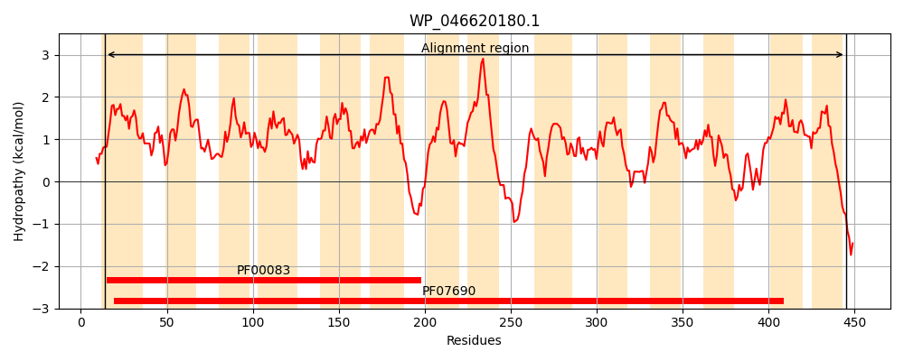
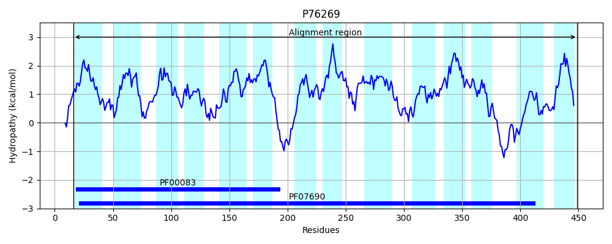
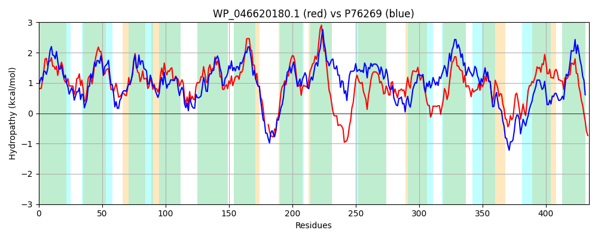

Hit Accession: P76269
Hit TCID: 2.A.1.3.17
Hit Description: gnl|BL_ORD_ID|11455 gnl|TC-DB|P76269|2.A.1.3.17 Hypothetical transport protein yebQ - Escherichia coli.
Mach Len: 434
e:0.000000
Query TMS Count : 14
Hit TMS Count: 14
TMS-Overlap Score: 12.700000
Predicted Substrates:CHEBI:9731;trimethoprim
BLAST Alignment:
Score: 978 , Bit scores: 381 bits, E-value: 4.1e-129, Alignment length: 434, Percentage identity: 46
Query: 14 GAVLAVSLSTVIAMLDSTIANVALPVIAKDFAVSESSSILIINAYQFAVIASLLVFAALGRKVGNKRIFIMGTILFAFSSLGCALSETLNMLTVFRVVQGFGAAAILSVNAALIKDIYPARLLGRGLGINVMVVSVSAAAGPSIASAILSIANWNWLFTINVPIACIALVLCIVSLKPR--QRMEARFDKAGGVLVFLTFISFSTMMLGLTKNNLIEVVLSAIILIILAFILYRDQRKKQDSALIPVAMFRSKTFSLSLLMSMLSYSTQLLAFVSLPFYFHNVLHRSVIEIGMLLTAWPLATMLTSLISGDLIKKHDPNLVALSGLSLLLAGTLLMTWLPAAPTNLQILWRVAICGFGFGLFQAPNNYLIMTSVSHENSSIASGLLGSSRLVGQIIGSALVAIFINIYASHGTSISLFAGALFSLLSLTVSYFR 445
GA+L + + +A+LD IANVALP IA D + +SSI ++NAYQ A++ SLL F+ LG G +RI+ G ++F SSL CALS++L MLT+ RV+QGFG AA++SVN ALI+ IYP R LGRG+GIN +V+VS+AAGP+IA+AILSIA+W WLF INVP+ IAL+L + L P + + RFD V+ LTF T + G + + ++ + ++++++ I + ++ L+PV + R FSLS+ S+ S+ Q+LA VSLPFY VL RS +E G+LLT WPLATM+ + ++G LI++ L+ GL ++ AG + LPA+P ++ I+W + +CG GFGLFQ+PNN+ I+TS E S ASG+LG++RL+GQ G+ALVA+ +N + +GT +SL A A+ ++++ VS R
Sbjct: 16 GAILTIVIGISMAVLDGAIANVALPTIATDLHATPASSIWVVNAYQIAIVISLLSFSFLGDMFGYRRIYKCGLVVFLLSSLFCALSDSLQMLTLARVIQGFGGAALMSVNTALIRLIYPQRFLGRGMGINSFIVAVSSAAGPTIAAAILSIASWKWLFLINVPLGIIALLLAMRFLPPNGSRASKPRFDLPSAVMNALTFGLLITALSGFAQGQSLTLIAAELVVMVVVGIFFIRRQLSLPVPLLPVDLLRIPLFSLSICTSVCSFCAQMLAMVSLPFYLQTVLGRSEVETGLLLTPWPLATMVMAPLAGYLIERVHAGLLGALGLFIMAAGLFSLVLLPASPADINIIWPMILCGAGFGLFQSPNNHTIITSAPRERSGGASGMLGTARLLGQSSGAALVALMLNQFGDNGTHVSLMAAAILAVIAACVSGLR 449 | Protein Hydropathy Plots: |
|---|
|  |  |
Pairwise Alignment-Hydropathy Plot:
|
|---|
|  |